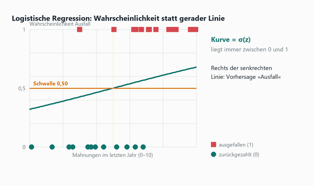
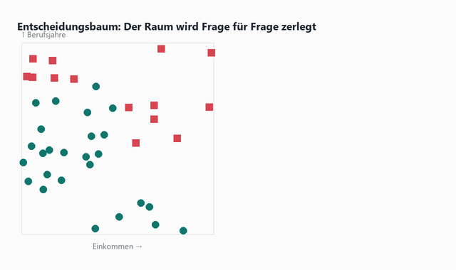
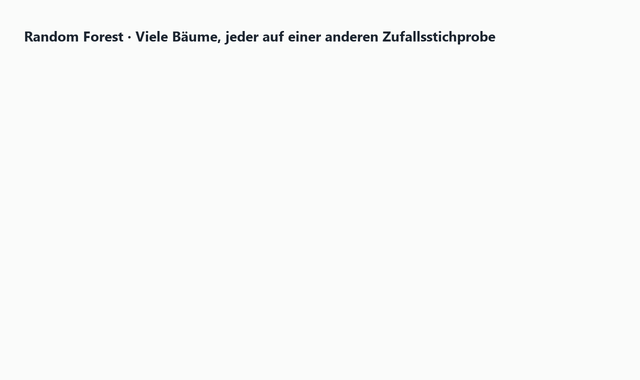
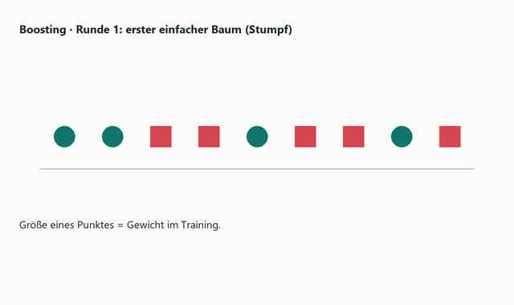
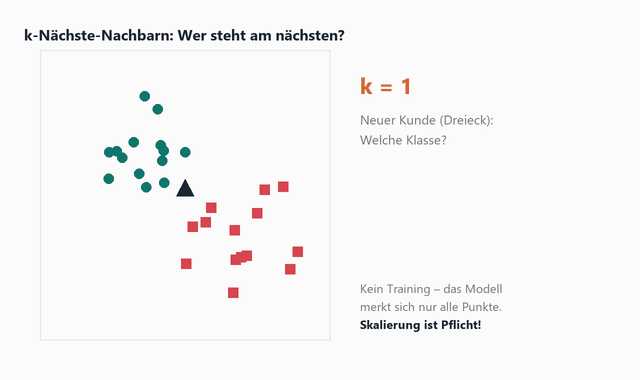
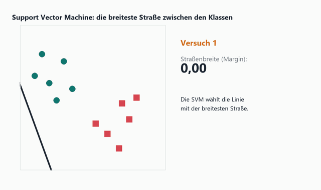

Jetzt lernen die Maschinen. In diesem Modul lernen Sie die Standardverfahren des überwachten Lernens kennen – von der geraden Linie (lineare Regression) über Entscheidungsbäume und ganze Wälder davon bis zu Support Vector Machines. Für jedes Verfahren erfahren Sie: Wie funktioniert es, wie rechnet man ein Beispiel von Hand, wo sind Stärken und Schwächen, und wann wählt man es in der Praxis?
Die einfachsten und am besten erklärbaren Verfahren – und der Maßstab, an dem sich alle anderen messen lassen müssen.
Eine neue Kollegin in der Kreditabteilung bekommt 500 alte Kreditakten mit dem Vermerk, ob der Kredit zurückgezahlt wurde. Sie studiert sie, entwickelt ein Gespür („hohe Schulden plus kurzer Job = riskant“) und entscheidet danach neue Anträge. Ein überwachtes Lernverfahren macht dasselbe – nur mit 500.000 Akten und in Sekunden.
fit(X_train, y_train)predict(X_val), mit Validierungsdaten bewerten und Hyperparameter anpassen.Ein Modell ist eine Funktion f, die aus Merkmalen x eine Vorhersage ŷ = f(x) macht. Jedes Verfahren hat eine eigene Form dieser Funktion (Linie, Baum, Abstandsregel) und eigene Parameter, die beim Training gelernt werden.
Ein Modell mit 92 % Accuracy klingt gut. Wenn aber 90 % aller Fälle „kein Ausfall“ sind, schafft die simple Regel „immer kein Ausfall“ schon 90 %. Erst der Vergleich mit der Baseline zeigt, ob ML überhaupt etwas bringt.
fit(X_train, y_train).Ein Händler sagt den Wochenabsatz voraus. Die einfachste Regel („wie in der Vorwoche“) liegt im Schnitt 12 Stück daneben (MAE 12). Ein Modell erreicht MAE 8. Verbesserung: (12 − 8) : 12 ≈ 33 %. Erreichte das Modell dagegen nur 11,5, wäre der Aufwand kaum gerechtfertigt. Erst der Abstand zur Baseline macht die Leistung greifbar.
Bei einer Kündigungsvorhersage kündigen 8 % der Kunden. Die Baseline „bleibt immer“ schafft 92 %. Ein Modell mit 93 % ist nur einen Punkt besser – möglicherweise nutzlos. Wichtiger ist, wie viele der Kündigenden es findet (Recall). Genau deshalb kommt in Schritt 3 die Baseline, noch bevor das erste Modell trainiert wird.
Frage (5 Punkte): Nennen Sie die Schritte des überwachten Lernens und erklären Sie, wozu eine Baseline dient.
Musterlösung: Ziel festlegen, Daten vorbereiten, Baseline bestimmen, Modell trainieren, mit Validierungsdaten bewerten und einstellen, einmal testen und einsetzen (3 Punkte). Die Baseline ist die einfachste denkbare Lösung (z. B. immer die häufigste Klasse); nur wenn das Modell sie deutlich schlägt, bringt Machine Learning einen Nutzen (2 Punkte).
Ziel festlegen, Daten vorbereiten, Baseline messen, trainieren, validieren, einmal testen. Ohne Baseline kein Urteil über ein Modell.
Ein Taxi kostet 4 € Grundgebühr plus 2 € pro Kilometer. Für 10 km zahlen Sie 24 €. Das ist eine lineare Formel: fester Startwert plus Steigung mal Menge. Die lineare Regression findet so eine Formel aus Beispielen, wenn man die Preisliste nicht kennt, sondern nur viele Quittungen hat.
Für jede mögliche Linie misst man den Abstand jedes Punktes zur Linie (Residuum), quadriert und addiert. Die beste Linie hat die kleinste Summe – das ist genau der MSE aus Modul 2. Bei einem Merkmal gibt es dafür eine direkte Formel, bei vielen Merkmalen nutzt man Matrixrechnung oder Gradientenabstieg.
Mietmodell: Miete = 200 + 10 · Fläche − 3 · Entfernung zur Innenstadt (km). Jeder zusätzliche Quadratmeter erhöht die Miete um 10 € – bei gleicher Entfernung. Jeder Kilometer weiter draußen senkt sie um 3 €. Diese Deutbarkeit ist die große Stärke linearer Modelle.
Gewichte nur vergleichen, wenn die Merkmale gleich skaliert sind. „Fläche: 10“ und „Entfernung: −3“ sagen nichts darüber, welches Merkmal wichtiger ist, denn Quadratmeter und Kilometer sind verschiedene Einheiten.
Drei Wohnungen: 40 m² → 520 €, 60 m² → 700 €, 80 m² → 960 €.
Fehler des Modells: 40 m² → Vorhersage 506,67 (Fehler +13,33); 60 m² → 726,67 (−26,67); 80 m² → 946,67 (+13,33). Die Residuen summieren sich zu 0. MSE = (177,8 + 711,1 + 177,8) : 3 ≈ 355,6, RMSE ≈ 18,9 €.
Ein Modell für den Preis eines Gebrauchtwagens: Preis = 24.000 − 1.800 · Alter (Jahre) − 0,06 · Kilometer + 1.200 · Automatik (0/1).
Das Mietmodell wurde mit Wohnungen von 40 bis 80 m² trainiert. Für 300 m² liefert es 66,67 + 11 · 300 ≈ 3.367 €. Ob das stimmt, weiß niemand: Große Villen folgen anderen Regeln als kleine Wohnungen. Ein Modell sollte nur im Bereich eingesetzt werden, den die Trainingsdaten abdecken. Außerhalb davon ist jede Vorhersage eine Vermutung.
Frage (5 Punkte): Ein Modell lautet Umsatz = 20 + 4 · Werbung (Werbung in Tausend €, Umsatz in Tausend €). Berechnen Sie den Umsatz für 12 und erklären Sie die Zahlen 20 und 4.
Musterlösung: 20 + 4 · 12 = 68 (Tausend €) (2 Punkte). 20 ist der Achsenabschnitt: der Umsatz ohne Werbung (1,5 Punkte). 4 ist die Steigung: Jede weitere Tausend Euro Werbung erhöht den Umsatz im Mittel um 4 Tausend Euro (1,5 Punkte).
Lineare Regression = gewichtete Summe der Merkmale plus Achsenabschnitt; gelernt durch kleinste Fehlerquadrate. Jedes Gewicht heißt: so viel ändert sich ŷ pro Einheit, alles andere gleich.
Ein Dimmer statt eines Lichtschalters: Statt nur „an“ oder „aus“ kann er alle Helligkeiten dazwischen. Die logistische Regression liefert nicht nur „Ausfall ja/nein“, sondern eine Wahrscheinlichkeit zwischen 0 und 1. Erst eine Schwelle macht daraus die Entscheidung – wie der Punkt am Dimmer, ab dem Sie „hell genug“ sagen.

| z | −2 | −1 | 0 | 1 | 2 | 4 |
|---|---|---|---|---|---|---|
| σ(z) | 0,119 | 0,269 | 0,500 | 0,731 | 0,881 | 0,982 |
Standard ist 0,5. Ist ein übersehener Fall teuer (Betrug, Krankheit), senkt man die Schwelle: mehr Fälle werden erkannt (Recall steigt), dafür mehr Fehlalarme (Precision sinkt). Die Wahl der Schwelle ist eine betriebswirtschaftliche Entscheidung.
Mit Softmax statt Sigmoid bekommt jede Klasse eine Wahrscheinlichkeit, zusammen 100 %: „Rechnung 70 % · Technik 25 % · Kündigung 5 %“. Die höchste gewinnt.
Die logistische Regression heißt „Regression“, ist aber ein Klassifikationsverfahren. Sie ist gut erklärbar: Ein positives Gewicht erhöht die Wahrscheinlichkeit der Klasse 1. Darum ist sie bei Kreditentscheidungen und in regulierten Bereichen beliebt.
Das Modell lautet z = −3 + 0,8 · Mahnungen.
| Mahnungen | z | σ(z) | Entscheidung (Schwelle 0,5) |
|---|---|---|---|
| 2 | −1,4 | ≈ 0,198 | kein Ausfall |
| 5 | 1,0 | ≈ 0,731 | Ausfall |
| 8 | 3,4 | ≈ 0,968 | Ausfall |
Je mehr Mahnungen, desto höher die Wahrscheinlichkeit – aber nie genau 0 oder 1. Die Sigmoid-Kurve schmiegt sich an beide Grenzen an.
Ein Betrugsfall verursacht im Mittel 500 € Schaden, die manuelle Prüfung einer Zahlung kostet 20 €. Prüfen lohnt sich, sobald Wahrscheinlichkeit · 500 € > 20 €, also ab p > 20 : 500 = 0,04. Die sinnvolle Schwelle liegt hier bei 4 %, nicht bei 50 %. Bei einem Modell, dessen Fehlalarme fast nichts kosten, senkt man die Schwelle stark; bei teuren Fehlalarmen (z. B. Kunden grundlos sperren) hebt man sie an.
Ein Modell bewertet eine Kundenmail mit den Punktzahlen: Rechnung 2, Technik 1, Kündigung 0. Softmax macht daraus Wahrscheinlichkeiten: e² ≈ 7,39 · e¹ ≈ 2,72 · e⁰ = 1, Summe ≈ 11,11. Ergebnis: Rechnung ≈ 66,5 %, Technik ≈ 24,5 %, Kündigung ≈ 9,0 % (zusammen 100 %). Die Mail wird der Rechnungsabteilung zugeordnet.
Frage (5 Punkte): Ein Modell berechnet z = −1 + 0,5 · x. Für x = 4: Berechnen Sie die Wahrscheinlichkeit σ(z) und geben Sie die Klasse bei Schwelle 0,5 an. Warum ist es trotz des Namens kein Regressionsverfahren?
Musterlösung: z = −1 + 2 = 1; σ(1) ≈ 0,731 (2 Punkte). 0,731 > 0,5: Klasse 1 (1 Punkt). Die logistische Regression sagt eine Kategorie voraus (über eine Wahrscheinlichkeit und eine Schwelle), nicht eine beliebige Zahl; sie ist daher ein Klassifikationsverfahren (2 Punkte).
Logistische Regression: gewichtete Summe → Sigmoid → Wahrscheinlichkeit → Schwelle → Klasse. Klassifikation, kein Regressionsverfahren.
Die Arbeitspferde für Tabellendaten: verständliche Bäume und die starken Teams aus vielen Bäumen.
Das Spiel „Wer bin ich?“: Mit geschickten Ja/Nein-Fragen („Ist die Person männlich?“, „Lebt sie noch?“) findet man schnell die Lösung. Gute Spieler stellen zuerst die Frage, die die Möglichkeiten am stärksten aufteilt. Genau so baut ein Algorithmus einen Entscheidungsbaum.

Für jedes Merkmal und jeden möglichen Schwellenwert prüft der Algorithmus: Wie „rein“ sind die beiden entstehenden Gruppen? Die Frage mit der größten Verbesserung gewinnt. Das wird für jede Gruppe wiederholt, bis eine Abbruchregel greift.
Ausgangsknoten: 10 Anträge, 5 Zusage, 5 Ablehnung. Die Frage teilt in links 4 Anträge (4 Zusage, 0 Ablehnung) und rechts 6 (1 Zusage, 5 Ablehnung).
Ein Baum ohne Grenzen wächst, bis jedes Blatt nur noch ein einziges Beispiel enthält – er lernt die Trainingsdaten auswendig. Gegenmittel: maximale Tiefe (max_depth), Mindestanzahl je Blatt (min_samples_leaf), Pruning (nachträgliches Zurückschneiden). Außerdem ist ein einzelner Baum instabil: Kleine Datenänderungen ergeben einen ganz anderen Baum.
| Knoten (Zusage / Ablehnung) | Rechnung | Gini |
|---|---|---|
| 10 / 0 (rein) | 1 − (1² + 0²) | 0 |
| 9 / 1 | 1 − (0,9² + 0,1²) = 1 − 0,82 | 0,18 |
| 7 / 3 | 1 − (0,7² + 0,3²) = 1 − 0,58 | 0,42 |
| 5 / 5 (maximal gemischt) | 1 − (0,5² + 0,5²) | 0,50 |
Je gleichmäßiger die Mischung, desto höher der Gini-Wert (maximal 0,5 bei zwei Klassen). Der Baum sucht nach Fragen, die den Wert verkleinern.
Ein Knoten hat 20 Anträge: 10 Zusagen, 10 Ablehnungen (Gini 0,5).
Der Baum wählt Frage A: Sie trennt die Gruppen deutlich besser. Die Frage B bringt fast nichts.
| max_depth | Genauigkeit Training | Genauigkeit Validierung | Deutung |
|---|---|---|---|
| 2 | 80 % | 78 % | zu einfach (Underfitting) |
| 5 | 90 % | 86 % | beste Validierung |
| 10 | 98 % | 82 % | beginnt auswendig zu lernen |
| unbegrenzt | 100 % | 79 % | Overfitting |
Der Abstand zwischen Training und Validierung wächst mit der Tiefe. Gewählt wird die Tiefe mit der besten Validierung, nicht die mit dem besten Trainingsergebnis.
Frage (6 Punkte): Ein Knoten mit 3 A und 1 B wird verglichen mit einem Knoten mit 8 A und 2 B. Berechnen Sie jeweils den Gini-Wert und sagen Sie, welcher reiner ist.
Musterlösung: Knoten 1: 1 − (0,75² + 0,25²) = 1 − 0,625 = 0,375 (2 Punkte). Knoten 2: 1 − (0,8² + 0,2²) = 1 − 0,68 = 0,32 (2 Punkte). Knoten 2 ist reiner, weil der Gini-Wert kleiner ist (2 Punkte).
Ein Baum wählt die Frage, die die Gruppen am reinsten macht (Gini oder Entropie). Erklärbar, aber ohne Tiefenbegrenzung stark überangepasst.
Bei einer Quizshow kann man das Publikum befragen. Einzelne Zuschauer liegen oft daneben, aber die Mehrheit hat erstaunlich oft recht – vorausgesetzt, die Leute denken unabhängig voneinander. Ein Random Forest ist ein Publikum aus vielen, bewusst unterschiedlichen Entscheidungsbäumen.

Klassifikation: Mehrheitsentscheid. Regression: Mittelwert der Vorhersagen aller Bäume.
| Hyperparameter | Bedeutung | Typischer Wert |
|---|---|---|
n_estimators | Anzahl Bäume – mehr ist stabiler, aber langsamer | 100–500 |
max_depth | maximale Tiefe jedes Baums | unbegrenzt bis 20 |
max_features | Merkmale pro Frage | Wurzel aus Merkmalszahl |
min_samples_leaf | Mindestbeispiele pro Blatt | 1–10 |
Ein Random Forest mit 100 Bäumen beurteilt einen Kreditantrag. 62 Bäume stimmen für „Zusage“, 38 für „Ablehnung“. Entscheidung: Zusage. Zusätzlich liefert der Wald eine Schätzung: 62 : 100 = 62 % Zusage. Bei 52 : 48 wäre der Wald unsicher, bei 95 : 5 sehr sicher. Diese Zahl kann man als Schwelle für die Weitergabe an einen Menschen nutzen.
Aus 10 Trainingszeilen wird für einen Baum 10-mal mit Zurücklegen gezogen. Die Chance, dass eine bestimmte Zeile nicht gezogen wird, ist bei jedem Zug 9/10; nach 10 Zügen 0,9¹⁰ ≈ 0,35. Bei großen Datensätzen nähert sich der Wert 0,368 (etwa 37 %). Ein Baum sieht also etwa 63 % der Zeilen, und etwa 37 % der Zeilen sind für ihn „Testdaten“ (Out-of-Bag). So bekommt man eine ehrliche Schätzung des Fehlers, ohne Daten abzutrennen.
| Merkmal | Wichtigkeit |
|---|---|
| Schuldenquote | 0,32 |
| Einkommen | 0,25 |
| Beschäftigungsdauer | 0,18 |
| Kredithöhe | 0,15 |
| Laufzeit | 0,10 |
Die Werte ergeben zusammen 1. Die Schuldenquote trägt am meisten zu den Entscheidungen bei. Wichtig: Das sagt nicht, in welche Richtung ein Merkmal wirkt (höhere Schulden senken die Zusage-Chance), nur wie stark es genutzt wird. Und: Stark korrelierte Merkmale teilen sich ihre Wichtigkeit.
Frage (6 Punkte): Erklären Sie, wie ein Random Forest arbeitet und warum mehrere Bäume bessere Ergebnisse liefern als einer.
Musterlösung: Viele Entscheidungsbäume werden auf zufälligen Stichproben der Trainingsdaten (Bootstrap) trainiert, und bei jeder Frage steht nur eine zufällige Teilmenge der Merkmale zur Wahl (2 Punkte). Die Bäume sind dadurch verschieden; bei Klassifikation entscheidet die Mehrheit, bei Regression der Mittelwert (2 Punkte). Die Fehler einzelner Bäume gleichen sich aus, das senkt die Varianz und das Overfitting (2 Punkte).
Random Forest = viele Bäume auf Zufallsstichproben mit Zufallsmerkmalen, Mehrheitsentscheid. Bagging senkt die Varianz.
Eine Schülerin übt für die Prüfung. Nach jedem Übungstest schaut sie, welche Aufgaben sie falsch hatte, und übt genau diese beim nächsten Mal intensiver. Jede Runde verbessert die Schwächen der vorherigen. Das ist Boosting.

| Bagging (Random Forest) | Boosting (z. B. Gradient Boosting) | |
|---|---|---|
| Training | parallel, Bäume unabhängig | nacheinander, jeder korrigiert den vorigen |
| Bäume | tief, einzeln überangepasst | flach, einzeln schwach („Stümpfe“) |
| Senkt vor allem | Varianz | Bias |
| Overfitting-Risiko | gering | höher – Lernrate und Rundenzahl begrenzen |
| Bekannte Umsetzungen | scikit-learn RandomForest | AdaBoost, XGBoost, LightGBM, CatBoost |
Der erste Baum macht eine grobe Vorhersage, der zweite Baum lernt die verbleibenden Fehler (Residuen) des ersten, der dritte die Fehler von beiden zusammen – und so weiter. Jeder Beitrag wird mit einer kleinen Lernrate multipliziert, damit das Modell vorsichtig lernt. Bei Tabellendaten gehört Gradient Boosting oft zu den genauesten Verfahren überhaupt.
Eine dritte Ensemble-Art: Verschiedene Modelle (z. B. logistische Regression, Random Forest, kNN) machen Vorhersagen, und ein übergeordnetes Meta-Modell lernt, wie man diese am besten kombiniert.
Wahre Mieten: 500, 700 und 900 €. Lernrate 0,5.
Mit Lernrate 1 würde der erste Baum seine Fehler sofort in voller Höhe „korrigieren“ – und dabei auch das Rauschen mitlernen. Mit Lernrate 0,1 sind mehr Runden nötig, aber jeder Schritt ist vorsichtig, das Ergebnis verallgemeinert besser. Typisch: kleine Lernrate (0,05–0,1) und viele Runden (einige hundert), mit Früh-Abbruch, wenn die Validierung nicht mehr besser wird.
Frage (6 Punkte): Nennen Sie drei Unterschiede zwischen Bagging (Random Forest) und Boosting.
Musterlösung: Bagging trainiert die Bäume parallel und unabhängig, Boosting nacheinander, wobei jeder Baum die Fehler der vorherigen korrigiert (2 Punkte). Bagging nutzt tiefe Bäume, Boosting flache, schwache Bäume (2 Punkte). Bagging senkt vor allem die Varianz, Boosting den Bias; Boosting neigt eher zu Overfitting (2 Punkte).
Bagging: parallel, unabhängig, senkt Varianz. Boosting: nacheinander, korrigiert Fehler, senkt Bias. Stacking: ein Meta-Modell kombiniert verschiedene Modelle.
Drei ganz unterschiedliche Ideen: Nachbarn fragen, die breiteste Straße finden, Wahrscheinlichkeiten multiplizieren.
Sie ziehen in eine neue Stadt und wollen wissen, welche Partei in Ihrer Straße gewählt wird. Sie fragen die fünf nächsten Nachbarn: Drei sagen A, zwei sagen B – Ihre beste Schätzung ist A. Mehr steckt hinter kNN nicht.

Bekannte Kunden (Alter in Jahrzehnten, Käufe pro Monat → Klasse): A (2; 1) Nein · B (3; 2) Nein · C (2,5; 4) Ja · D (5; 5) Ja · E (4; 1) Nein · F (4,5; 4) Ja
k = 1: sehr empfindlich, ein einzelner Ausreißer entscheidet (Overfitting). Großes k: zu grob, Details gehen verloren (Underfitting). Bei zwei Klassen ein ungerades k wählen, damit es kein Unentschieden gibt. k über Validierung bestimmen.
Die sechs bekannten Kunden aus dem Rechner: A (2 | 1) Nein, B (3 | 2) Nein, C (2,5 | 4) Ja, D (5 | 5) Ja, E (4 | 1) Nein, F (4,5 | 4) Ja. Der neue Kunde hat die Werte (3,5 | 3).
| Kunde | Rechnung | Abstand | Klasse |
|---|---|---|---|
| B | √(0,5² + 1²) = √1,25 | 1,12 | Nein |
| C | √(1² + 1²) = √2 | 1,41 | Ja |
| F | √(1² + 1²) = √2 | 1,41 | Ja |
| E | √(0,5² + 2²) = √4,25 | 2,06 | Nein |
| A | √(1,5² + 2²) = √6,25 | 2,50 | Nein |
| D | √(1,5² + 2²) = √6,25 | 2,50 | Ja |
Je nach k ändert sich die Antwort. Deshalb wählt man k anhand von Validierungsdaten.
Man will den Preis einer Wohnung schätzen. Die drei ähnlichsten Wohnungen kosteten 200.000 €, 220.000 € und 240.000 €. Vorhersage: (200 + 220 + 240) : 3 = 220 Tausend €. Man kann auch nach Entfernung gewichten, sodass nähere Nachbarn stärker zählen.
Bei jeder einzelnen Vorhersage muss der Abstand zu allen Trainingspunkten berechnet werden. Bei 1 Million Trainingspunkten sind das 1 Million Abstandsberechnungen pro Anfrage – bei 10.000 Anfragen pro Sekunde viel zu langsam. Deshalb nutzt man Suchstrukturen oder wählt andere Verfahren. Dafür braucht kNN kein Training.
Frage (5 Punkte): Warum ist beim kNN-Verfahren die Skalierung der Merkmale wichtig, und wie wählt man k?
Musterlösung: kNN beruht auf Abständen; Merkmale mit großen Zahlenwerten (z. B. Einkommen in Euro) würden den Abstand dominieren und kleine (Alter) kaum zählen (2 Punkte). Man standardisiert vorher (1 Punkt). k wird mit Validierungsdaten (oder Kreuzvalidierung) bestimmt; bei zwei Klassen ungerades k wählen, um Unentschieden zu vermeiden (2 Punkte).
kNN: k nächste Nachbarn suchen, Mehrheit nehmen. Kein Training, Skalierung Pflicht, k per Validierung wählen.
Zwischen zwei verfeindeten Dörfern soll eine Straße gebaut werden – möglichst breit, damit sich niemand zu nahe kommt. Die Lage der Straße bestimmen nur die Häuser, die ganz am Rand stehen. Alle anderen Häuser könnte man verschieben, ohne dass sich die Straße ändert. Diese Randhäuser heißen bei der SVM Support-Vektoren.

Manchmal lassen sich Klassen nicht durch eine Gerade trennen – etwa wenn eine Klasse als Ring um die andere liegt. Der Kernel-Trick rechnet die Daten gedanklich in einen höherdimensionalen Raum um, in dem sie trennbar werden. Beispiel: Fügt man den Abstand zur Mitte als dritte Dimension hinzu, liegt der Ring „höher“ als die Mitte und lässt sich mit einer flachen Ebene abschneiden. Übliche Kernel: linear, polynomial, RBF (radiale Basisfunktion, der Standard).
Die Trennlinie lautet x₁ + x₂ − 5 = 0. Für einen neuen Punkt setzt man ein: Punkt (1 | 2): 1 + 2 − 5 = −2 → negativ → Klasse „Kreis“. Punkt (4 | 3): 4 + 3 − 5 = +2 → positiv → Klasse „Quadrat“. Das Vorzeichen entscheidet, der Betrag zeigt, wie weit der Punkt von der Linie entfernt ist. Die Straßenbreite beträgt hier 2 : √(1² + 1²) = 2 : 1,41 ≈ 1,41 Einheiten.
| Kleines C | Großes C | |
|---|---|---|
| Straße | breit | schmal |
| Fehler im Training | einige erlaubt | kaum erlaubt |
| Risiko | Underfitting | Overfitting (Ausreißer bestimmen die Linie) |
| Wann? | verrauschte Daten | saubere, gut getrennte Daten |
Auf einer Zahlenachse liegen Klasse A bei x = −1, 0, +1 und Klasse B bei x = −3 und +3. Keine einzelne Schwelle trennt sie (A liegt in der Mitte). Fügt man ein zweites Merkmal x² hinzu, entstehen Punkte: A (−1 | 1), (0 | 0), (1 | 1) und B (−3 | 9), (3 | 9). Jetzt trennt die waagerechte Linie x² = 5 beide Klassen sauber. Der Kernel-Trick leistet dieses „Hinzufügen“ von Merkmalen rechnerisch geschickt, ohne sie wirklich auszurechnen.
Frage (5 Punkte): Erklären Sie die Begriffe Margin und Support-Vektor einer SVM und die Wirkung eines großen Wertes für C.
Musterlösung: Der Margin ist der Abstand der Trennlinie zu den nächsten Punkten beider Klassen; die SVM maximiert ihn (2 Punkte). Support-Vektoren sind die Punkte direkt am Rand der „Straße“; nur sie bestimmen die Lage der Linie (1 Punkt). Ein großes C bestraft Fehler stark, der Margin wird schmal, die Gefahr von Overfitting steigt (2 Punkte).
SVM sucht die Trennlinie mit dem größten Abstand. Nur die Support-Vektoren zählen. Der Kernel-Trick macht nicht lineare Grenzen möglich.
Eine Detektivin sammelt Indizien: Das Wort „gratis“ macht eine Mail verdächtiger, ein bekannter Absender macht sie unverdächtiger. Jedes Indiz verschiebt die Einschätzung ein Stück. Naive Bayes rechnet genau so – „naiv“, weil es so tut, als hätten die Indizien nichts miteinander zu tun.
Aus den Trainingsdaten: 30 % der Mails sind Spam. „gratis“ steht in 40 % der Spam-Mails und in 5 % der normalen Mails.
30 % der Mails sind Spam. Das Wort „gratis“ steht in 40 % der Spam- und 5 % der normalen Mails, das Wort „Gewinn“ in 25 % der Spam- und 1 % der normalen Mails. Eine Mail enthält beide Wörter.
Ein einzelnes Indiz brachte 77 %, zwei Indizien zusammen fast 99 %. Das ist die Stärke: Viele schwache Hinweise addieren sich.
Das Wort „Zertifikat“ kam in den Trainingsdaten in 0 von 100 Spam-Mails vor. Dann wäre P(Zertifikat | Spam) = 0, und das gesamte Produkt würde 0: Jede Mail mit diesem Wort gälte als „kein Spam“, egal wie viele andere Hinweise es gibt. Die Laplace-Glättung verhindert das, indem man überall etwas hinzuzählt, z. B. (0 + 1) : (100 + 2) ≈ 0,0098. Ein ungesehenes Wort ist dann selten, aber nicht unmöglich.
Eine Firma ordnet Mails den Klassen „Rechnung“, „Technik“ und „Kündigung“ zu. Für jede Klasse speichert das Verfahren, wie häufig jedes Wort dort vorkommt. Eine neue Mail mit „Zahlung“, „Rechnung“ und „offen“ erhält für „Rechnung“ ein viel größeres Produkt als für die anderen und wird dorthin sortiert. Das funktioniert auch mit einigen hundert Beispielen pro Klasse erstaunlich gut und ist in Millisekunden trainiert.
Frage (5 Punkte): 20 % der Mails sind Spam. Das Wort „Angebot“ steht in 50 % der Spam-Mails und in 10 % der normalen Mails. Wie wahrscheinlich ist eine Mail mit „Angebot“ Spam?
Musterlösung: Spam-Seite: 0,2 · 0,5 = 0,10 (1,5 Punkte). Normal-Seite: 0,8 · 0,1 = 0,08 (1,5 Punkte). Normiert: 0,10 : (0,10 + 0,08) = 0,556, also etwa 55,6 % (2 Punkte).
Naive Bayes multipliziert die Grundrate mit den Wahrscheinlichkeiten jedes Merkmals je Klasse. Schnell, gut für Text, aber „naiv“ unabhängig.
Parameter einstellen, das richtige Verfahren wählen, erklären, programmieren – und ein vollständiger Fall von A bis Z.
Beim Backen stellen Sie vorher Temperatur und Backzeit ein – das sind die Einstellungen von außen. Wie der Teig dabei aufgeht, ergibt sich von selbst. Hyperparameter sind die Ofeneinstellungen, die der Mensch wählt. Parameter sind das, was im Training von selbst entsteht.
| Verfahren | Parameter (gelernt) | Wichtige Hyperparameter (eingestellt) |
|---|---|---|
| Lineare / logistische Regression | Gewichte w₀ … wₙ | Regularisierungsstärke (alpha bzw. C) |
| Entscheidungsbaum | Fragen und Schwellenwerte | max_depth, min_samples_leaf, Kriterium Gini/Entropie |
| Random Forest | alle Bäume | n_estimators, max_depth, max_features |
| Gradient Boosting | alle Bäume | Lernrate, Anzahl Runden, Baumtiefe |
| kNN | – (speichert nur Daten) | k, Abstandsmaß |
| SVM | Lage der Hyperebene, Support-Vektoren | C, Kernel, gamma |
| Neuronales Netz | Gewichte, Bias | Lernrate, Schichten, Neuronen, Epochen |
from sklearn.model_selection import GridSearchCV from sklearn.ensemble import RandomForestClassifier raster = {"n_estimators": [100, 300], "max_depth": [5, 10, None]} suche = GridSearchCV(RandomForestClassifier(random_state=42), raster, cv=5, scoring="f1") suche.fit(X_train, y_train) print(suche.best_params_, suche.best_score_)
| Größe | Art | Begründung |
|---|---|---|
| Gewicht w₁ in der linearen Regression | Parameter | wird im Training gelernt |
| Anzahl k der Nachbarn bei kNN | Hyperparameter | vorher vom Menschen eingestellt |
| Schwellenwert „Einkommen > 5“ in einem Baum | Parameter | vom Algorithmus gefunden |
| Maximale Tiefe des Baums | Hyperparameter | Einstellung des Menschen |
| Lernrate beim Gradientenabstieg | Hyperparameter | Einstellung des Menschen |
| Gewichte eines neuronalen Netzes | Parameter | werden trainiert |
Raster: n_estimators ∈ {100, 300} und max_depth ∈ {5, 10, None}. Das sind 2 · 3 = 6 Kombinationen. Mit 5-facher Kreuzvalidierung wird jede Kombination fünfmal trainiert: 6 · 5 = 30 Trainings. Kommt ein weiterer Hyperparameter mit 4 Werten hinzu, sind es schon 6 · 4 · 5 = 120. Die Zahl wächst schnell – deshalb ist Random Search bei vielen Einstellungen oft die klügere Wahl.
Beim Random Forest wird die Baumtiefe variiert. Training: 0,80 / 0,92 / 0,99 / 1,00; Validierung: 0,78 / 0,87 / 0,83 / 0,80 (für Tiefe 2 / 5 / 10 / unbegrenzt). Ausgewählt wird die Tiefe 5 mit der höchsten Validierung (0,87). Bei größerer Tiefe steigt nur noch das Trainingsergebnis – das Modell lernt Details auswendig. Anschließend wird einmal mit den Testdaten geprüft.
Frage (5 Punkte): Erklären Sie den Unterschied zwischen Parametern und Hyperparametern. Nennen Sie je ein Beispiel. Wie viele Trainings entstehen bei einer Grid Search mit 3 Werten für max_depth, 4 Werten für n_estimators und 5-facher Kreuzvalidierung?
Musterlösung: Parameter werden im Training gelernt (z. B. die Gewichte einer Regression), Hyperparameter vom Menschen vorab eingestellt (z. B. max_depth oder k) (3 Punkte). Kombinationen: 3 · 4 = 12; Trainings: 12 · 5 = 60 (2 Punkte).
Parameter lernt das Modell, Hyperparameter wählt der Mensch – per Validierung, nie per Testdaten.
Für eine Schraube nimmt man einen Schraubendreher, für einen Nagel einen Hammer. Es gibt kein bestes Werkzeug für alles – in der KI heißt das „No Free Lunch“: Kein Verfahren ist bei allen Aufgaben das beste. Die Wahl hängt von Daten, Ziel und Rahmenbedingungen ab.
| Situation | Empfehlung | Begründung |
|---|---|---|
| Entscheidung muss begründet werden (Kredit, Personal, Behörde) | Logistische Regression, flacher Entscheidungsbaum | Gewichte und Regeln sind direkt erklärbar |
| Tabellendaten, höchste Genauigkeit | Gradient Boosting, Random Forest | sehr stark auf Tabellen, wenig Vorverarbeitung |
| Wenig Daten, viele Merkmale, Text | Naive Bayes, lineare SVM, logistische Regression | kommen mit wenig Beispielen aus |
| Bilder, Audio, freie Sprache | Neuronale Netze (Modul 7), vortrainierte Modelle | lernen Merkmale selbst |
| Erster schneller Vergleich | Baseline + logistische Regression + Random Forest | zeigt schnell, wie viel Potenzial da ist |
| Sehr wenig Rechenzeit bei der Vorhersage (Gerät, Echtzeit) | lineares Modell, kleiner Baum | schnell und klein |
Immer drei Teile: Verfahren nennen – Eigenschaft des Verfahrens – Bezug zum Fall. Beispiel: „Ich empfehle einen Random Forest, weil er auf Tabellendaten robust gute Ergebnisse liefert und über die Feature Importance zeigt, welche Maschinendaten den Ausfall vorhersagen. Das hilft der Instandhaltung bei der Ursachensuche.“
Bewertung von 1 (schlecht) bis 5 (sehr gut):
| Verfahren | Erklärbarkeit | Genauigkeit | Tempo |
|---|---|---|---|
| Logistische Regression | 5 | 3 | 5 |
| Random Forest | 3 | 4 | 3 |
| Gradient Boosting | 2 | 5 | 3 |
Die Wahl hängt von den Gewichten ab – und diese kommen aus dem Anwendungsfall, nicht aus der Technik.
Ein Betrieb testet drei Modelle auf denselben Daten: Baseline F1 0,00; logistisch 0,47; Random Forest 0,51; Boosting 0,52. Der Unterschied zwischen Forest und Boosting beträgt einen Punkt – kaum aussagekräftig. Dann entscheiden andere Kriterien: Wie schnell ist die Vorhersage? Wie gut lässt sich das Modell erklären? Wie aufwendig ist die Pflege? Die Genauigkeit allein entscheidet selten.
Frage (6 Punkte): Eine Versicherung will Betrugsverdacht bei Schadensmeldungen vorhersagen; Entscheidungen müssen später gegenüber der Aufsicht begründbar sein. Welches Verfahren empfehlen Sie und warum?
Musterlösung: Logistische Regression oder ein flacher Entscheidungsbaum (2 Punkte), weil die Entscheidung über Gewichte bzw. Regeln im Einzelfall erklärbar ist (2 Punkte). Zusätzlich zum Vergleich ein Random Forest oder Boosting, um zu sehen, wie viel Leistung die Erklärbarkeit kostet (1 Punkt); Baseline nicht vergessen (1 Punkt).
Kein Verfahren ist immer das beste. Erklärbarkeit → linear oder flacher Baum; Tabellen → Boosting/Forest; Bilder und Sprache → neuronale Netze; immer gegen eine Baseline vergleichen.
Ein erfahrener Arzt sagt: „Ich habe ein ungutes Gefühl, wir machen weitere Tests.“ Ein Lehrbuch sagt: „Bei Fieber über 39 Grad und Ausschlag: Test X.“ Das Bauchgefühl ist oft treffsicherer, das Lehrbuch nachvollziehbarer. Bei KI-Modellen gibt es dasselbe Spannungsfeld.
| Verfahren | Erklärbarkeit | Typische Leistung auf Tabellen |
|---|---|---|
| Lineare / logistische Regression | sehr hoch (Gewichte) | gut, wenn Zusammenhänge annähernd linear |
| Flacher Entscheidungsbaum | sehr hoch (Regeln) | mittel |
| kNN | mittel („diese ähnlichen Fälle“) | mittel |
| Random Forest | mittel (Feature Importance) | hoch |
| Gradient Boosting | gering bis mittel | sehr hoch |
| SVM mit Kernel, neuronales Netz | gering | hoch |
Mit Verfahren der erklärbaren KI (XAI) kann man auch komplexe Modelle nachträglich erklären: Feature Importance (welche Merkmale zählen insgesamt), SHAP und LIME (warum diese eine Entscheidung). Details in Modul 10. Wo das Gesetz eine Begründung im Einzelfall verlangt (DSGVO Art. 22, Hochrisiko-Systeme im AI Act), ist ein von Natur aus erklärbares Modell oft die sicherere Wahl.
Die logistische Regression einer Bank hat die Gewichte: Schuldenquote +1,2, Beschäftigungsdauer −0,4 (je Jahr), Einkommen −0,6 (je 10.000 €). Einem abgelehnten Antragsteller kann man sagen: „Ihre hohe Schuldenquote und die kurze Beschäftigungsdauer haben die Einschätzung am stärksten verschlechtert; ein höheres Einkommen hätte sie verbessert.“ Das ist eine Begründung, die ein Mensch versteht – und die die Bank auch gegenüber einer Behörde vorlegen kann.
Ein Boosting-Modell schätzt das Ausfallrisiko eines Antrags auf 17 %. Das durchschnittliche Risiko im Bestand beträgt 6 %. SHAP zerlegt die Differenz in Beiträge der Merkmale:
6 % + 9 (Schuldenquote) + 5 (kurze Beschäftigung) − 3 (hohes Einkommen) = 17 %
So lässt sich auch ein komplexes Modell Fall für Fall erklären: Die Schuldenquote erhöht das Risiko am stärksten, das Einkommen wirkt dämpfend.
Frage (5 Punkte): Warum kann es sinnvoll sein, ein etwas weniger genaues, aber erklärbares Modell zu wählen? Nennen Sie zwei Verfahren zur nachträglichen Erklärung.
Musterlösung: Wenn Entscheidungen im Einzelfall begründet werden müssen (z. B. Kredit, Personal; DSGVO, AI Act) oder wenn Vertrauen und Fehlersuche wichtig sind, ist Erklärbarkeit wichtiger als wenige Prozentpunkte Genauigkeit (3 Punkte). Nachträgliche Erklärung: SHAP und LIME; außerdem Feature Importance (2 Punkte).
Je leistungsstärker das Modell, desto schwerer meist die Erklärung. Die Abwägung hängt von rechtlichen Vorgaben und dem Schaden falscher Entscheidungen ab.
Jedes Auto hat Gas, Bremse und Lenkrad an derselben Stelle – egal welche Marke. scikit-learn ist so gebaut: Jedes Verfahren hat dieselben Bedienelemente fit, predict und score. Wer eins beherrscht, kann alle fahren.
from sklearn.model_selection import train_test_split from sklearn.dummy import DummyClassifier from sklearn.linear_model import LogisticRegression from sklearn.tree import DecisionTreeClassifier from sklearn.ensemble import RandomForestClassifier, GradientBoostingClassifier from sklearn.neighbors import KNeighborsClassifier from sklearn.metrics import f1_score modelle = { "Baseline": DummyClassifier(strategy="most_frequent"), "Logistisch": LogisticRegression(max_iter=1000), "Baum": DecisionTreeClassifier(max_depth=4), "Random Forest": RandomForestClassifier(n_estimators=300, random_state=42), "Boosting": GradientBoostingClassifier(), "kNN": KNeighborsClassifier(n_neighbors=5), } for name, m in modelle.items(): m.fit(X_train, y_train) # lernen vorhersage = m.predict(X_val) # vorhersagen print(name, round(f1_score(y_val, vorhersage), 3)) # Wahrscheinlichkeiten statt Klassen: wahrsch = modelle["Logistisch"].predict_proba(X_val)[:, 1] # Wichtigkeit der Merkmale im Random Forest: print(modelle["Random Forest"].feature_importances_)
Hinweis: Für kNN und die logistische Regression gehört eine Skalierung in eine Pipeline (Modul 3), hier aus Platzgründen weggelassen.
Der Code aus der Lektion trainiert sechs Modelle und gibt jeweils den F1-Wert aus. Eine mögliche Ausgabe:
| Modell | F1 (Validierung) |
|---|---|
| Baseline | 0,000 |
| Logistisch | 0,470 |
| Baum | 0,440 |
| Random Forest | 0,510 |
| Boosting | 0,520 |
| kNN | 0,400 |
Die Baseline erreicht F1 = 0, weil sie nie die seltene Klasse vorhersagt. Alle anderen schlagen sie deutlich. Zwischen Random Forest und Boosting ist der Unterschied klein.
wahrsch = modelle["Logistisch"].predict_proba(X_val)[:, 1]
Erklärung: predict_proba liefert für jeden Validierungsfall eine Tabelle mit den Wahrscheinlichkeiten für jede Klasse (Spalte 0 = Klasse 0, Spalte 1 = Klasse 1). Mit [:, 1] wird nur die Spalte der Klasse 1 ausgewählt, also die Wahrscheinlichkeit für „Ausfall“. So lässt sich später eine eigene Schwelle anlegen.
m.fit(X_test, y_test) ist Leakage – gelernt wird nur mit Trainingsdaten.m.score(...) liefert Accuracy – bei 2 % Ausfällen irreführend; besser f1_score oder recall_score.random_state ändern sich die Ergebnisse bei jedem Lauf.Frage (5 Punkte): Erklären Sie die Aufgaben der drei Methoden fit, predict und predict_proba.
Musterlösung: fit trainiert das Modell mit den übergebenen Trainingsdaten (Merkmale und Labels) (2 Punkte). predict liefert für neue Fälle die vorhergesagte Klasse bzw. Zahl (1,5 Punkte). predict_proba liefert die Wahrscheinlichkeiten je Klasse, auf die man eine eigene Schwelle anwenden kann (1,5 Punkte).
scikit-learn: fit lernt, predict sagt vorher, predict_proba liefert Wahrscheinlichkeiten. Immer eine Baseline mitlaufen lassen.
Die Bäckerei weiß: Samstags werden mehr Brötchen verkauft, im August weniger, und bei Regen kommen weniger Laufkunden. Wer morgen backen will, schaut auf letzte Woche, den Wochentag und den Wetterbericht. Zeitreihenprognose ist überwachtes Lernen mit Merkmalen aus der Vergangenheit.
| Bestandteil | Bedeutung | Beispiel |
|---|---|---|
| Trend | langfristige Richtung | Onlineshop wächst jedes Jahr |
| Saisonalität | wiederkehrende Muster | Wochentag, Monat, Weihnachten |
| Zufall | nicht erklärbare Schwankung | Einzelereignisse |
| Externe Einflüsse | bekannte Zusatzinformationen | Wetter, Feiertage, Werbeaktion |
Absatz gestern, Absatz vor 7 Tagen, Durchschnitt der letzten 4 Wochen, Wochentag, Feiertag ja/nein. Damit kann jedes Verfahren aus diesem Modul (z. B. Gradient Boosting) Prognosen machen.
Naive Prognose: morgen wie heute. Saisonal naiv: Samstag wie letzter Samstag. Ein Modell, das diese einfachen Regeln nicht schlägt, ist nutzlos. Spezielle Verfahren: ARIMA, exponentielle Glättung, neuronale Netze (LSTM, Modul 7).
Merkmale dürfen nur bekannte Vergangenheit enthalten. „Absatz am Vorhersagetag“ als Merkmal ist Leakage. Und: Aufteilung immer zeitlich (Modul 3).
Brötchenabsatz einer Bäckerei (Stück): Mo 100, Di 110, Mi 105, Do 120; in der Vorwoche war der Donnerstag 115.
Die saisonale Regel ist hier deutlich besser. Ein ML-Modell müsste noch genauer sein, sonst lohnt der Aufwand nicht.
| Tag | Absatz (Ziel) | Absatz gestern | Absatz vor 7 Tagen | Ø der letzten 3 Tage | Wochentag |
|---|---|---|---|---|---|
| Do | 120 | 105 | 115 | (100 + 110 + 105) : 3 = 105 | Do |
Jede Zeile enthält nur Informationen, die am Vorhersagetag bereits bekannt sind. Der heutige Absatz selbst kommt nicht als Merkmal vor.
Der Absatz schwankt mit dem Wetter: bei Regen −10 %, bei Sonne am Wochenende +15 %. Fügt man die Wettervorhersage als Merkmal hinzu, kann das Modell darauf reagieren. Achtung: Man darf nur die Vorhersage des Wetters nutzen, die man auch am Vorhersagetag hat, nicht das tatsächliche Wetter, das erst später bekannt wird (sonst Leakage).
Frage (6 Punkte): Für die Prognose des Wochenabsatzes wollen Sie ein Modell trainieren. Nennen Sie drei geeignete Merkmale, eine Baseline und die richtige Aufteilung der Daten.
Musterlösung: Merkmale: Absatz der Vorwoche, Durchschnitt der letzten vier Wochen, Kalenderwoche oder Feiertag (je 1 Punkt, max. 3). Baseline: „wie in der Vorwoche“ (1 Punkt). Aufteilung: zeitlich, ältere Wochen Training, jüngste Wochen Test, kein zufälliges Mischen (2 Punkte).
Zeitreihen: Trend + Saison + Zufall. Lag-Merkmale bauen, zeitlich aufteilen, gegen „wie letzte Woche“ vergleichen.
Eine Regionalbank bearbeitet 2.000 Kleinkreditanträge pro Monat von Hand. 6 % der Kredite fallen aus. Die Bank möchte eine KI-Unterstützung, die das Ausfallrisiko einschätzt. Die Sachbearbeitung entscheidet weiterhin selbst.
Genau diese Gliederung – Ziel, Daten, Vorbereitung, Baseline, Modelle, Entscheidung mit Begründung, Schwelle aus Kosten, Einsatz und Überwachung – ist eine sehr gute Vorlage für die Präsentation in der Prüfung.
Die Bank bearbeitet 2.000 Anträge pro Monat, 6 % fallen aus: 2.000 · 0,06 = 120 Ausfälle, im Mittel je 4.000 € Verlust, zusammen 120 · 4.000 = 480.000 €.
Ein übersehener Ausfall kostet 4.000 €, eine zusätzliche Prüfung 30 €. Das Verhältnis ist etwa 133 : 1. Prüft man schon ab einer Ausfallwahrscheinlichkeit von 0,25 statt 0,5, werden deutlich mehr Ausfälle erkannt (Recall steigt), dafür gibt es mehr Fehlalarme (Precision sinkt). Weil ein Fehlalarm so viel billiger ist als ein Ausfall, ist die niedrigere Schwelle wirtschaftlich sinnvoll.
Obwohl Geschlecht und Nationalität nicht als Merkmal verwendet werden, können andere Merkmale (z. B. Wohnort oder Teilzeit) damit zusammenhängen und indirekt benachteiligen. Deshalb wird nach dem Training geprüft: Sind Ablehnungsquoten und Fehlerquoten für verschiedene Gruppen vergleichbar? Zeigt sich eine auffällige Differenz, muss das Modell überarbeitet werden (Modul 10).
Frage (6 Punkte): Nennen Sie in der richtigen Reihenfolge sechs Bausteine eines KI-Projekts, wie sie in der Fallstudie vorkommen, und begründen Sie die Wahl der logistischen Regression.
Musterlösung: Ziel, Daten und Merkmale, Vorbereitung und Aufteilung, Baseline, Modelle vergleichen, Entscheidung mit Schwelle und Einsatz/Überwachung (3 Punkte). Die logistische Regression wurde gewählt, weil Ablehnungen begründet werden müssen und die Gewichte die Entscheidung erklären; der kleine Leistungsverlust gegenüber Boosting ist der Preis der Erklärbarkeit (3 Punkte).
Ein gutes KI-Projekt begründet jede Entscheidung: welches Ziel, welche Daten, welches Modell, welche Schwelle – und warum.
Tragen Sie Ihre Antworten in die Felder ein. Zahlen und Auswahl prüft die Seite selbst, Freitext bewertet auf Knopfdruck die KI wie ein IHK-Prüfer. Öffnen Sie die Musterlösung erst danach.
Ein Modell für die Heizkosten eines Gebäudes lautet: Kosten = 150 + 8,5 · Heizgradtage. Berechnen Sie die Kosten für einen Monat mit 60 Heizgradtagen und erklären Sie die Bedeutung von 8,5.
150 + 8,5 · 60 = 150 + 510 = 660 € (2 P.). 8,5 bedeutet: Jeder zusätzliche Heizgradtag erhöht die Kosten um 8,50 € (1 P.).
Hauspreis = 50.000 + 2.000 · Wohnfläche − 1.500 · Alter des Hauses. Welcher Preis ergibt sich für 100 m² und ein 10 Jahre altes Haus?
50.000 + 200.000 − 15.000 = 235.000 €.
Ein Modell berechnet z = −2 + 0,5 · x. Für einen Kunden ist x = 6. Berechnen Sie die Wahrscheinlichkeit σ(z) auf drei Nachkommastellen. Welche Klasse wird bei der Schwelle 0,5 vorhergesagt?
z = −2 + 3 = 1; σ(1) = 1 / (1 + e⁻¹) ≈ 0,731 (2 P.). Da 0,731 > 0,5: Klasse 1 (1 P.).
Ein Knoten enthält 6 Zusagen und 4 Ablehnungen. Berechnen Sie die Gini-Unreinheit.
1 − (0,6² + 0,4²) = 1 − (0,36 + 0,16) = 0,48.
Ein Knoten mit 5 A und 5 B (Gini 0,5) wird geteilt in links 4 A / 0 B und rechts 1 A / 5 B. Berechnen Sie (a) die gewichtete Gini-Unreinheit nach der Teilung und (b) den Gewinn, jeweils auf zwei Nachkommastellen.
Links Gini 0, rechts 1 − (1/36 + 25/36) ≈ 0,278. (a) 0,4 · 0 + 0,6 · 0,278 ≈ 0,17. (b) 0,5 − 0,167 ≈ 0,33.
Wie groß ist die Entropie (log₂) eines Knotens mit (a) 50 % / 50 % und (b) 100 % / 0 %?
(a) 1 (maximale Unordnung bei zwei Klassen). (b) 0 (reiner Knoten).
Die Abstände eines neuen Punktes zu fünf Trainingspunkten: A 1,0 (rot), B 1,5 (blau), C 2,0 (blau), D 2,2 (rot), E 3,0 (rot). Welche Klasse wird vorhergesagt bei k = 1, k = 3 und k = 5?
k = 1: A → rot. k = 3: A, B, C → 2 × blau → blau. k = 5: 3 × rot, 2 × blau → rot.
30 % aller Mails sind Spam. Das Wort „gratis“ steht in 40 % der Spam-Mails und in 5 % der normalen Mails. Mit welcher Wahrscheinlichkeit ist eine Mail mit „gratis“ Spam (in Prozent, eine Nachkommastelle)?
0,3 · 0,4 = 0,12; 0,7 · 0,05 = 0,035; 0,12 : 0,155 ≈ 77,4 %.
Erklären Sie den Unterschied zwischen Bagging und Boosting. Nennen Sie je ein Verfahren.
Bagging trainiert viele Modelle parallel und unabhängig auf Zufallsstichproben und mittelt bzw. stimmt ab – senkt die Varianz (Beispiel Random Forest) (2 P.). Boosting trainiert nacheinander, jedes Modell konzentriert sich auf die Fehler der vorigen – senkt den Bias (Beispiel Gradient Boosting, XGBoost, AdaBoost) (2 P.).
Welches Verfahren passt am besten? (1) Eine Bank muss jede Kreditablehnung begründen. (2) Ein Händler will bei Tabellendaten die höchste Prognosegenauigkeit. (3) Ein kleiner Betrieb will mit wenigen hundert Beispielen Mails nach Spam filtern.
(1) Logistische Regression (oder flacher Baum). (2) Gradient Boosting (oder Random Forest). (3) Naive Bayes.
Ordnen Sie zu: (1) maximale Baumtiefe, (2) Gewicht w₁ einer linearen Regression, (3) k bei kNN, (4) der im Training gefundene Schwellenwert einer Baumfrage.
(1) Hyperparameter, (2) Parameter, (3) Hyperparameter, (4) Parameter.
Erklären Sie die Begriffe Margin, Support-Vektoren und Kernel-Trick in je einem Satz.
Margin: der Abstand (die Straßenbreite) zwischen Trennlinie und den nächsten Punkten beider Klassen, den die SVM maximiert (1 P.). Support-Vektoren: die Punkte am Rand der Straße, die allein die Lage der Trennlinie bestimmen (1 P.). Kernel-Trick: Die Daten werden rechnerisch in einen höherdimensionalen Raum abgebildet, in dem sie linear trennbar werden (1 P.).
20 Fragen, jeweils eine richtige Antwort. Ab 14 richtigen Antworten sind Sie gut vorbereitet.
| Verfahren | Idee | Aufgabe | Stärke | Schwäche |
|---|---|---|---|---|
| Lineare Regression | gewichtete Summe, kleinste Quadrate | Regression | erklärbar | nur lineare Zusammenhänge |
| Logistische Regression | Summe → Sigmoid → Wahrscheinlichkeit | Klassifikation | erklärbar, Wahrscheinlichkeiten | lineare Grenze |
| Entscheidungsbaum | Fragen nach Gini/Entropie | beides | Regeln vorlesbar | Overfitting, instabil |
| Random Forest | viele Zufallsbäume, Mehrheit | beides | robust | weniger erklärbar |
| Gradient Boosting | Bäume korrigieren Vorgänger | beides | sehr genau | Einstellung aufwendig |
| kNN | Mehrheit der k Nachbarn | beides | einfach, kein Training | langsam, Skalierung nötig |
| SVM | breiteste Straße, Kernel | Klassifikation | viele Merkmale | langsam bei vielen Daten |
| Naive Bayes | Bayes mit Unabhängigkeit | Klassifikation | schnell, Text | „naive“ Annahme |
Weiter mit Modul 5: Unüberwachtes Lernen und Reinforcement Learning – Lernen ohne Lösungsheft.